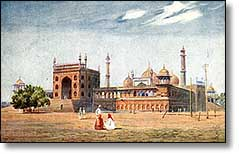
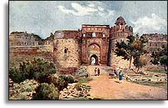

The
historic Purana Qila, which has stood witness to Delhi's rejuvenation,
periods of anarchy, and the rise & fall of empires, brings alive
history of the capital. Amidst the tranquility of the splendidly
panoramic environs of Purana Qila, Delhi's historic and legendary past
come to life. After Shah Jahan built Red Fort the attention of
administration shifted to gorgeous palaces of the fort. Today the fort
is open for the public but only limited area can be accessed. More than
half of the fort area has been taken over by the Army. But even what is
open to visit reminds one of the splendour and lavish life style which
our rulers lived. Delhi has seen the death of many empires and resisted
bloody attempts to eliminate her. Nadir Shah had ordered his soldiers to
plunder and massacre Delhi. It is said that he got so much wealth from
Delhi that he was not able to carry in home. Abdali and Taimur Lane were
no different they had tried their best to demolish the city of Delhi but
it was some kind of a boon which helped it to regain its lost glory each
time Delhi was plundered.
Delhi
was the focal point for the first war of independence in 1857. Though
the revolt did not reach its desired conclusion, Delhi became a thorn in
the eyes of the British. Not only in ancient times or the mediaeval
period, Delhi has been the center of any activity at all times. As the
Britishers shifted their capital from Calcutta to Delhi, all the
activities during the freedom struggle were directed towards Delhi.
Thus, Delhi also bears the marks of the freedom struggle. The ultimate
goal of the Azad Hind Fauz during the freedom struggle was to capture
Delhi and established Swaraj. The slogan 'Dilli Chalo' is still used by
leaders and political parties when they oraganise any rally or
demonstration. It was the hosting of the tricolour at Red Fort in Delhi
which marked a chapter in the history of India.